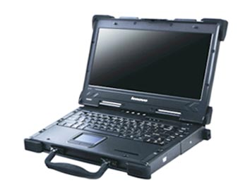

支持多种视频导入方式，可以是客户端本地的视频文件，也可以是网络共享方式或移动硬盘的方式，支持海康、大华 等主流监控视频格式。
导入完成的文件，可以拖动进视频播放窗口中进行播放，支持多画面同时播放，并可分别对各个视频进行不同控制。
播放中的视频，程序能将视频中有目标的时间点以蓝色方块标注在时间轴中，蓝色方块中的绿色线条是目标被识别到的标记，灰色区域是没有目标活动的区域。
可以自动跳过视频中无目标的区域，减少观看所需时间，提高工作效率。支持浓缩视频导出功能。
对视频中的人和车进行筛选，缩小检索范围，基于人车颜色检索更精确地定位目标。支持人车越界、人车闯入闯出、 人员服饰体型特征搜索等检索方式。
导入嫌疑目标的图片，并圈中目标对象，然后将视频中跟照片中嫌疑目标服饰体型相似的目标提取出来，显示在检索结果区域。
在视频中检测出人脸目标，并在结果区显示。
根据选择图片人脸特征在视频中检索相似的人脸。
在视频中提取车辆信息，如车牌、车标、车身颜色、车型等，同时可以根据自动提取的车辆索引信息，通过条件过滤、条件组合寻找嫌疑车辆。
联想昭阳R2000T单兵设备以其灵活便携的使用方式、高性能的配置，稳定可靠的工业级设计，细致人性化的用户体验，充分展现了单兵图侦设备的优势，为公安刑侦等部门紧密联系实战，快速高效响应，深入基层侦查提供了有力的支撑。